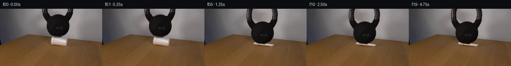

![首帧]()

Round 00
2026-11-05T20:10:08.298861+00:00像素候选变化代码 +218/−0inspection 更新
pixels 920219afe677313b · code c8efc3c15d105219
查看本轮 generate.py 真实 diff
--- previous/generate.py
+++ current/generate.py
@@ -0,0 +1,218 @@
+"""Deterministic photographic pixel continuation; no learned models or renderer."""
+from pathlib import Path
+import json
+import numpy as np
+from PIL import Image, ImageDraw
+from scipy import ndimage as ndi
+import cv2
+from artifact_io import save
+
+ROOT = Path(__file__).resolve().parent
+W, H = 256, 144
+im = np.asarray(Image.open(ROOT / 'first_frame.png').convert('RGB'), dtype=np.float64)
+yy, xx = np.mgrid[:H, :W].astype(np.float64)
+
+# Recover the rigid weight silhouette, retaining the bright metallic scuffs.
+core = (im.max(axis=2) < 90) & (xx >= 105) & (xx <= 184) & (yy <= 69)
+for y in range(20):
+ points = np.flatnonzero(core[y])
+ groups = np.split(points, np.flatnonzero(np.diff(points) > 5) + 1)
+ for group in groups:
+ if len(group):
+ core[y, group[0]:group[-1]+1] = True
+core = ndi.binary_fill_holes(core)
+labels, _ = ndi.label(core)
+sizes = np.bincount(labels.ravel()); sizes[0] = 0
+core = labels == sizes.argmax()
+bell_support = ndi.binary_dilation(core, iterations=1)
+bell_support[71:] = False
+
+# Cup contour measured on the supplied frame; left end is the rolled rim.
+scale = 4
+mask_img = Image.new('L', (W*scale, H*scale), 0)
+poly = [(130,69.8),(133.4,70.5),(137.5,72.3),(146,73.1),
+ (165.6,74.2),(168.5,75.3),(169,78.5),(167.7,86.4),
+ (165.8,93.7),(163.8,94.1),(153.5,92.2),(138.2,89.4),
+ (130,87.8),(127.2,85.8),(127.1,80.1),(128.1,74.5)]
+ImageDraw.Draw(mask_img).polygon([(round(x*scale),round(y*scale)) for x,y in poly], fill=255)
+cup_geom = np.asarray(mask_img.resize((W,H), Image.Resampling.LANCZOS),float)/255
+cup_geom[cup_geom < .02] = 0
+cup_support = cup_geom > 0
+
+# Local PDE inpainting supplies only the small bands uncovered by motion.
+remove = bell_support | ndi.binary_dilation(cup_support, iterations=1)
+background = cv2.inpaint(im.astype(np.uint8), (remove*255).astype(np.uint8), 5, cv2.INPAINT_NS).astype(float)
+
+# Soft alpha and edge decontamination keep the photographed contours intact.
+_, nearest = ndi.distance_transform_edt(~core, return_indices=True)
+near_color = im[nearest[0], nearest[1]]
+bg_luma = background.mean(axis=2)
+im_luma = im.mean(axis=2)
+near_luma = near_color.mean(axis=2)
+bell_alpha = np.clip((bg_luma-im_luma)/np.maximum(bg_luma-near_luma, 12), 0, 1) * bell_support
+bell_alpha[core] = 1
+bell_color = np.clip((im-background*(1-bell_alpha[...,None])) / np.maximum(bell_alpha[...,None], .01),0,255)
+bell_pm = bell_color * bell_alpha[...,None]
+
+# Cup edge matting uses the foam's color, including its warm lower shading.
+cup_inner = cup_geom > .9
+_, cup_nearest = ndi.distance_transform_edt(~cup_inner, return_indices=True)
+cup_ref = im[cup_nearest[0],cup_nearest[1]]
+vector = cup_ref-background
+num = ((im-background)*vector).sum(axis=2)
+den = (vector*vector).sum(axis=2)
+cup_edge_alpha = np.clip(num/np.maximum(den, 20),0,1)
+cup_alpha = cup_geom.copy()
+edge = (cup_geom > 0)&(cup_geom < .9)
+cup_alpha[edge] = np.minimum(cup_geom[edge]*1.5, cup_edge_alpha[edge])
+cup_color = np.clip((im-background*(1-cup_alpha[...,None]))/np.maximum(cup_alpha[...,None],.01),0,255)
+cup_pm = cup_color*cup_alpha[...,None]
+
+# Keep the untouched scene pixel-exact outside the original moving silhouettes.
+plate = im.copy()
+old_mask = (bell_alpha > .005) | (cup_alpha > .005)
+plate[old_mask] = background[old_mask]
+
+# Continue the cropped handle upward with fitted elliptical uprights.
+# Its crown remains outside the image even at the final displacement.
+pad = 24
+ba = np.zeros((H+pad,W)); bp = np.zeros((H+pad,W,3))
+ba[pad:] = bell_alpha; bp[pad:] = bell_pm
+for sy in range(-pad,0):
+ outer = 39.1*np.sqrt(max(0,1-((sy+3)/46)**2))
+ inner = 26.1*np.sqrt(max(0,1-((sy+3)/34)**2))
+ out0 = 39.1*np.sqrt(1-(3/46)**2)
+ in0 = 26.1*np.sqrt(1-(3/34)**2)
+ for side in [-1,1]:
+ a,b = sorted((144.3+side*outer,144.3+side*inner))
… diff truncated; 131 more lines …